arXiv 2603.14482 · cs.CV · v3 2026 年 6 月 11 日 · Meta FAIR · 中文精读
V-JEPA 2.1: Unlocking Dense Features in Video Self-Supervised Learning
作者 Lorenzo Mur-Labadia、Matthew Muckley、Amir Bar、Mido Assran、Koustuv Sinha、Mike Rabbat、Yann LeCun、Nicolas Ballas、Adrien Bardes，来自 FAIR at Meta（第一作者同时属于 Universidad de Zaragoza，工作在 Meta 完成）。
关于这份精读。这篇论文在 arXiv 上以 CC BY-NC-ND 4.0 发布（署名、非商业、禁止演绎）。PDF 上没有和它矛盾的版权声明。这里按原文顺序覆盖正文五节和附录 A 到 D，小节编号和原文一致，用自己的话整理，不是逐字翻译。公式按原文编号，表格数字照录原文（读的是 v3，2026-06-11；v1 是 2026-03-15）。
图 1 到图 15 从 arXiv PDF 裁切，只做了裁切和格式转换，没有改图内容，版权归作者。ND 许可不允许演绎，按惯例这类论文本站只用文字描述；这一批是经站点作者决定放原图，每张图注都写了出处、许可和看原图链接。图下的文字是我写的。本页的“读者注”是整理时核算或对照发现的，不属于论文内容，页尾有汇总。
代码。官方代码在 facebookresearch/vjepa2，和 V-JEPA 2 同一个仓库，2.1 的训练代码在 app/vjepa_2_1/，配置在 configs/train_2_1/ 和 configs/eval_2_1/，加载入口在 src/hub/backbones.py。许可大部分是 MIT，三个数据增强文件是 Apache 2.0。我读的是 204698b（2026-03-23，当时最新），只读，没有运行。OpenWAM 仓库里带了一份改写的推理用实现（vjepa21_src/），我也逐函数对照了，见代码对照。
V-JEPA 系列是 Meta 的视频自监督编码器：把视频遮掉一部分，在特征空间里预测被遮部分的特征。V-JEPA 2 的整体理解很强（动作识别、动作预测、机器人规划），但 patch 级的局部特征很乱，线性探针做分割、深度都差。2.1 要把局部特征补上，同时不丢整体理解。
做法是四件事：
结果：ViT-G 在 NYUv2 线性探针深度 RMSE 0.307（V-JEPA 2 是 0.642），ADE20K 分割 47.9 mIoU（V-JEPA 2 是 24.4），同时 SSv2 动作识别 77.7%，和 V-JEPA 2 的 77.3% 持平略高。Ego4D 短时交互预测 7.71 mAP、EPIC-KITCHENS-100 动作预测 40.8 Recall@5，都是冻结骨干下的最好成绩。
读完我认为最值得记住的三点：(1) 关键实验只有一个：V-JEPA 2 加上下文损失，ADE20K 从 22.2 跳到 33.8，但 SSv2 从 72.8 掉到 62.5，深监督把 SSv2 拉回 72.1（表 1）。“上下文损失换局部、深监督换回整体”是全文的骨架。(2) 同样 1B 大小时，2.1 在所有整体任务上都略低于 V-JEPA 2（读者注 20），整体任务上的“最好”要靠 2B 的 ViT-G。(3) 公开配置和论文附录有几处不同：图像的 λ、编码器中间层的位置、batch 大小和数据集（读者注 6、7、9）。
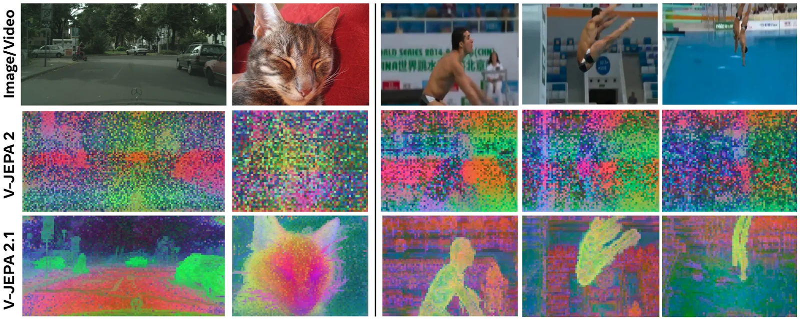
这一节只用本文和官方 README 里写到的内容交代来龙去脉，不展开前几篇的细节。
JEPA（LeCun 2022）：联合嵌入预测架构。同一个输入做一个“损坏版”和一个“干净版”，都过编码器；预测器从损坏版的表示预测干净版的表示。预测发生在表示空间，不重建像素。编码器和预测器一起学，会有“编码器输出常数”的平凡解，所以要防塌缩：显式正则（VICReg 一类）或隐式的 EMA 目标编码器加 stop-gradient（BYOL、I-JEPA 一类）。
V-JEPA（Bardes 等 2024，2404.08471）：把这个思路用到视频，损坏方式是遮掉时空块。表 9 里它的 ViT-H（6 亿参数）SSv2 74.3%。
V-JEPA 2（Assran 等 2025，2506.09985）：扩到 ViT-g（10 亿）、VideoMix22M 数据，预测器 12 层；图像复制成 16 帧当静止视频训练。后训练出动作条件的 V-JEPA 2-AC，在 DROID 机器人数据上学一个 3 亿参数的预测器，用模型预测控制在真实 Franka 机械臂上零样本做到达、抓取、放置（README：杯子抓取 60%，放置 80%）。整体理解和动作预测很强，但局部特征差，这是本文的出发点。
V-JEPA 2.1（本文）：同一个仓库、同一套遮挡策略，改的是损失（可见 token 也算）、监督位置（4 个中间层）、tokenizer（图像走 2D）、数据和规模。预测器加深到 24 层。
问题。世界模型的核心是状态估计：从嘈杂的低层感知里学到能总结当前世界状态的表示。视频自监督学习能利用大量无标签数据学几何、动力学和物理属性，是一条好路。但同时保住稠密时空结构（定位、几何、跟踪需要）和整体理解（高层识别需要）仍是难题。V-JEPA 家族整体理解强，局部结构难以提取（图 1）；DINO 系列稠密特征好，但基本是图像模型，不直接学时间动态。
核心发现。在“特征空间里做遮挡去噪”的框架下，只在被遮区域算预测损失时，好的稠密时空特征不会可靠地出现；把损失扩到全部输入（被遮和可见都算）能显著改善低层表示。原因的解释是：可见 token 不受监督，就会变成聚合全局信息的“寄存器”，不再编码自己位置的内容（图 3）。
贡献。稠密预测损失；深监督在两类任务上都带来稳定提升；图像和视频各自的 tokenizer 共享一个编码器；随数据（图像从 100 万到 1.42 亿张，VisionMix-163M）和模型（3 亿到 20 亿）扩展而持续提升。发布 ViT-g/G（1B/2B）和蒸馏出的 ViT-B/L（80M/300M）。
摘要里的数字：Ego4D 短时物体交互预测 7.71 mAP；EK-100 动作预测 40.8 Recall@5；真机抓取成功率比 V-JEPA 2-AC 高 20%（这个数怎么来的见读者注 16）；导航 TartanDrive 5.687 ATE，规划比 NWM 快 10 倍；NYUv2 线性探针深度 0.307 RMSE；Pascal VOC 线性分割 85.0 mIoU；YouTube-VOS 72.7 J&F；SSv2 77.7%；PerceptionTest 83.1。
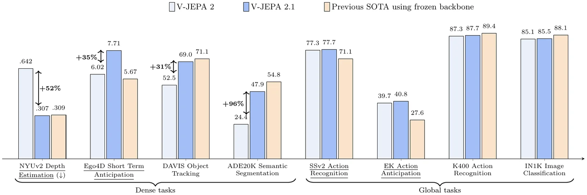
图注说标的是“V-JEPA 2.1 相对 V-JEPA 2 ViT-g 的提升”。其他三个对得上：NYUv2 (0.642 − 0.307)/0.642 = 52.2%，DAVIS 69.0/52.5 = 1.314，ADE20K 47.9/24.4 = 1.963。但 Ego4D 是 7.71/6.02 = 1.281，只有 +28%。+35% 对应的是相对 STAformer：7.71/5.67 = 1.360，正文 §3.1 说“比此前最好方法高约 35%”指的就是它。图上箭头画在 V-JEPA 2 和 2.1 两根柱子之间，容易读错。
图注说 SSv2 和 IN1K 的参照模型是 DINOv3。但图上 SSv2 是 71.1、IN1K 是 88.1，表 9 里 DINOv3 7B 是 70.1 和 88.4，ViT-H+ 是 69.8 和 87.9，两个数都找不到。另外 ADE20K 的米色柱 54.8 是 DINOv3 ViT-H+，而表 8 里 DINOv3 7B 是 55.9，更高；同一张图里 NYUv2 却用了 7B 的 0.309。所以“此前最好”这一栏的选取不一致，SSv2 和 IN1K 两个数的出处未核实。K400 89.4（InternVideo2s2）、EK 27.6（PlausiVL）、Ego4D 5.67（STAformer）、DAVIS 71.1（DINOv3）和表对得上。
编码器 \(E_\theta(\cdot)\) 处理损坏和干净两个版本，预测器 \(P_\phi(\cdot)\) 把损坏版的表示映射到干净版的表示。V-JEPA 的损坏方式是遮挡：\(x\) 是去掉若干 patch 的视频，编码器只处理可见 patch，输出“上下文 token”；再拼上一组可学的 mask token \(\Delta_y\)，它们带着被遮位置的时空坐标；预测器处理拼起来的序列，每个输入出一个向量。训练目标：
\(M\) 是被遮 patch 的下标集合。sg 是 stop-gradient，目标编码器 \(E_{\bar\theta}\) 的权重是 \(\theta\) 的指数滑动平均（EMA），两者一起防塌缩。损失只算被遮 token，不算上下文 token。编码器和预测器都是 ViT，遮挡策略同 V-JEPA 2（附录 A）。
之前没人系统看过 V-JEPA 2 特征的稠密任务表现。作者做了两件事：patch 特征做 PCA 可视化；冻结编码器、只训一个线性层做 ADE20K 语义分割和 NYUv2 深度估计（附录 C）。
观察。特征图有噪声，只有零碎的局部结构（图 1、图 3）。线性探针成绩差：ADE20K 22.2 mIoU，NYUv2 0.682 RMSE（表 1）。结论：局部信息不容易从 V-JEPA 2 的表示里取出来。
假设。原因是上下文 patch 没有自监督。预测器对上下文 token 也有输出，但式 (1) 只管被遮 token，所以模型没有动力在上下文 token 里保留局部信息，反而可能把算力用来聚合全局信息去降低预测损失，像 register token 那样。
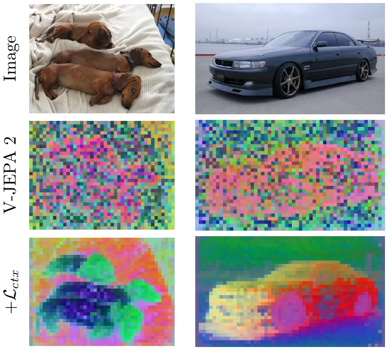
上下文自监督。为验证假设，对上下文 token 加一个加权的预测损失：
\(C\) 是上下文 token 的下标集合，\(\lambda_i\) 是逐 patch 的权重（下一节）。总目标 \(\mathcal L_{\rm predict}+\mathcal L_{\rm ctx}\)。效果明显：特征图出现局部结构，ADE20K 从 22.2 到 33.9，NYUv2 从 0.682 到 0.473。
§2.2 和 §2.3.1 写加上下文损失后是 33.9 mIoU、0.473 RMSE；表 1 和表 2 都是 33.8，表 1 是 0.474。§2.3.2 写深监督后“SSv2 72.0”，表 1 和图 5 都是 72.1。都是 0.1 的差，大概是不同轮次的结果，以表为准。
两个算法改动：(1) 稠密预测损失，被遮和可见 token 都监督（§2.3.1）；(2) 深监督，用多层预测器监督编码器的中间层（§2.3.2）。另外三项：多模态 tokenizer（§2.3.4）、数据扩展（§2.3.3）、模型扩展到 ViT-G（§2.3.5），后者也让蒸馏小模型更有效（§2.3.6）。
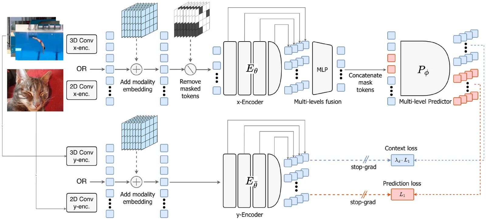
结构。输入按模态各自切 patch 嵌入；随机丢掉一部分 token 作为遮挡；x 编码器处理剩下的上下文 token，输出最后一层和若干中间层；多层表示沿通道拼起来，MLP 降维；沿序列拼上带时空位置信息的 mask token；预测器对每个 token 输出多层预测。两种损失都用 y 编码器（处理未遮挡输入）的多层输出做目标。
实现。沿用 V-JEPA 2 的“预热再恒定”学习率，训 135,000 步；EMA 系数和权重衰减固定。视频 16 帧、256×256，图像 256×256。第二阶段是冷却：学习率衰减，同时提高分辨率，再训 12,000 步，视频 64 帧、384×384，图像 512×512。消融都在第一阶段之后报告；最终下游结果用完整的预热—恒定—冷却流程。
评测。稠密任务（ADE20K、NYUv2）用线性探针，按 DINOv3 的协议；整体任务（SSv2 动作识别、ImageNet 物体识别）用注意力探针，按 V-JEPA 2 的协议。
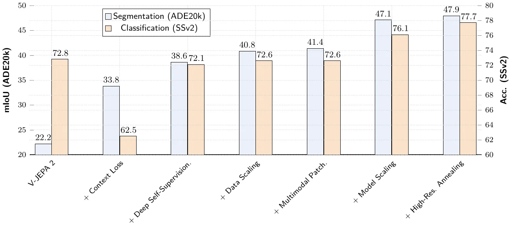
表 1 · 各组件的影响（照录原文。前五行 ViT-L；“+ Model Scaling” 换成 ViT-G；前六行是第一阶段结束时的成绩）
| 配置 | IN1K Acc. | SSv2 Acc. | NYU RMSE ↓ | ADE20K mIoU |
|---|---|---|---|---|
| V-JEPA 2 | 82.2 | 72.8 | 0.682 | 22.2 |
| + Context Loss | 72.6 | 62.5 | 0.474 | 33.8 |
| + Multi-level Pred. | 80.8 | 72.1 | 0.463 | 38.6 |
| + Vision Mix | 81.6 | 72.6 | 0.418 | 40.8 |
| + Multi-modal Tok. | 81.6 | 72.6 | 0.415 | 41.4 |
| + Model Scaling | 84.8 | 76.1 | 0.365 | 47.1 |
| + Cool-down | 85.5 | 77.7 | 0.307 | 47.9 |
原文表 1 的图注没写前几行是 ViT-L，这是从图 5 的图注（“从 ViT-L 架构出发”）和 §2.3.5（“从 ViT-L 扩到 ViT-G”）推出来的。最后一行和表 8、表 9 的 ViT-G 一致。
总损失 \(\mathcal L_{\rm dense}=\mathcal L_{\rm predict}+\mathcal L_{\rm ctx}\)。直接加 \(\mathcal L_{\rm ctx}\) 会伤整体任务，因为系统可能找到平凡解，比如直接复制上下文特征。所以要调 \(\lambda_i\)。表 2 是三种做法：
\(d_{\min}\) 以块（token）为单位。离被遮区越近的上下文 token 权重越大，强调被遮区和可见区之间的局部连续。这样在分割和动作识别之间取得较好的折中：ADE20K 22.2 → 33.9，NYUv2 0.682 → 0.473；图 3 显示它也把特征图里的噪点去掉了。但整体任务仍然掉：SSv2 72.8 → 62.5，IN1K 82.2 → 72.6（表 1）。
表 2 · 上下文损失的加权方式（照录原文，ViT-L，第一阶段）
| λ | 方式 | 预热 | ADE20K mIoU | SSv2 Acc. |
|---|---|---|---|---|
| 0（V-JEPA 2） | 常数 | 22.2 | 72.8 | |
| 0.05 | 常数 | 26.4 | 71.0 | |
| 0.2 | 常数 | 29.6 | 62.5 | |
| 0.5 | 常数 | 27.5 | 53.8 | |
| 1.0 | 常数 | 24.6 | 51.1 | |
| 0.2 | 常数 | ✓ | 30.5 | 60.5 |
| 0.5 | 常数 | ✓ | 32.2 | 61.5 |
| 0.5 | 按距离加权 | ✓ | 33.8 | 62.5 |
表 2 的 SSv2 一列看上去和图注说的“加权方案在两项上都更好”有点出入：按距离加权（62.5）只比同样 0.5 加预热的常数（61.5）高 1.0，比 λ = 0.05 不加预热（71.0）低 8.5。也就是说，单看这张表，“几乎不伤 SSv2”的最好办法是把 λ 调得很小；加权方案的好处是在 ADE20K 拿到最高分（33.8）的同时 SSv2 比同档 λ 的其他做法高。真正把 SSv2 拉回来的是下一节的深监督。
app/vjepa_2_1/models/utils/masks_dist.py 的 compute_mask_distance 把 token 下标拆成（时间块、行、列）三个整数坐标，对每个上下文 token 用 torch.cdist(p=2) 算到所有被遮 token 的欧氏距离，取最小值再开平方；train.py 的 loss_fn 把 \(|z-h|\) 乘上 1/d。所以 \(\lambda_i=\lambda/\sqrt{d_{\min}}\) 和式 (3) 一致，“块”就是 token 网格的单位，时间方向一个单位是 2 帧（一个 tubelet）。
由此可以推出一个论文没说的性质：配置里遮挡的 temporal_scale 是 [1.0, 1.0]，每个遮挡块贯穿所有时间，同一空间位置要么全时段被遮、要么全时段可见。所以最近的被遮 token 总在同一时间块，\(d_{\min}\) 其实只是空间距离，最小为 1，权重最大就是 λ。另外两点：λ 的预热在代码里是 Lambda_LinearWarmupHold，第 15,000 到 30,000 步线性升；配置 ipe: 300（每 epoch 300 步），正好是论文说的第 50 到 100 个 epoch。冷却配置把 weight_distance_loss 设为 false、lambda_progressive 设为 false，冷却阶段的上下文损失是不加距离权重的常数 λ，论文没提。
附录 A 和表 12 写 λ 视频 0.5、图像 0.7。configs/train_2_1/ 下 B、L、g、G 四个尺寸的预训练和冷却配置全都是 lambda_value_img: 0.5、lambda_value_vid: 0.5。train.py 按进程是图像还是视频选其中一个值。公开配置和论文不一致，哪个是发布检查点实际所用未核实。
不只监督编码器的输出，也监督中间层。取 x 编码器 3 个中间块的输出加上最后一层，沿通道拼起来，一个轻量 MLP 融合并降维，再送进预测器；预测器处理上下文和 mask token 组成的序列，输出 4 份预测，对应编码器的 4 层；预测损失和上下文损失在 4 层上都算。
深监督在整体和稠密任务上都有明显提升（图 5），还让局部信息流到最后几层，下游稠密任务不再需要中间层特征（附录 D.1）。它把 V-JEPA 2 的整体能力找回来（SSv2 72.1、IN1K 80.8），同时保住上下文损失带来的稠密提升（ADE20K 38.6，NYU 0.463）。
表 12 写 ViT-G 的中间块是 [12, 24, 36, 48]，附录 A 说“等间距”。代码 vision_transformer.py 里 48 层的 hierarchical_layers 是 [11, 23, 37, 47]（从 0 数），换成从 1 数是 12、24、38、48，第三个不是 36，也不等间距。ViT-g（40 层）是 [9, 19, 29, 39]，即 10、20、30、40，等间距；ViT-L 是 [5, 11, 17, 23]，ViT-B 是 [2, 5, 8, 11]。发布的 ViT-G 检查点用 [11, 23, 37, 47] 训练，加载时必须一致，所以我认为表 12 的 36 是笔误。
预测器（predictor.py）：输入端的“MLP 融合”是 Linear(4D → D)、GELU、Linear(D → 384)，ViT-G 时 D = 1664，即 6656 → 1664 → 384；24 层、宽 384、12 个头；输出端被遮 token 用 predictor_proj，上下文 token 另用一个 predictor_proj_context，都是 Linear(384 → 4D)。上下文 token 有独立的输出头，图 4 和正文没画出来。目标一侧，forward_target 把 y 编码器的 4 层输出各自再做一次无参 LayerNorm 后拼起来，损失是 4D 维上的逐元素 L1 均值，等于 4 层各自 L1 的平均。
DINOv2 用聚类检索从网上图片里挑出 1.42 亿张，叫 LVD-142M；V-JEPA 2 用类似方法从 YT-1B 视频里挑场景，加上公开视频数据，共 1,900 万个样本、160 万小时。本文把两者合起来叫 VisionMix163M：ImageNet 的 100 万张图换成 LVD-142M；图像已经覆盖很多静态概念，视频采样就偏向运动多的内容，SSv2 权重从 0.056 提到 0.170；YT-1B 更杂，权重从 0.188 提到 0.720。
表 3 · VideoMix22M 和 VisionMix163M（照录原文）
| 来源 | 样本数 | 类型 | 总时长 | V-JEPA 2 权重 | V-JEPA 2.1 权重 |
|---|---|---|---|---|---|
| SSv2 | 168K | 第一视角视频 | 168 h | 0.056 | 0.170 |
| Kinetics | 733K | 第三视角视频 | 614 h | 0.188 | 0.010 |
| HowTo100M | 1.1M | 第三视角视频 | 134K h | 0.318 | 0.100 |
| ImageNet | 1M | 图像 | – | 0.250 | 0. |
| YT-1B | 19M | 第三视角视频 | 1.6M h | 0.188 | 0.720 |
| LVD-142M | 142M | 筛选过的图像 | – |
怎样混图像和视频。不在同一个 batch 里混，而是分给不同的进程：一部分 GPU 只跑视频，一部分只跑图像，每步把两边的梯度汇总再更新。图像和视频的比例由各自的 batch 大小控制，经验上最好的是每个全局 batch 128 段视频（每段 16 帧）加 2,304 张图。换成更大更杂的数据，四项都涨：SSv2 72.1 → 72.6，ImageNet 80.8 → 81.6，ADE20K 38.6 → 40.8，NYUv2 0.463 → 0.418。
两列权重各自加起来都是 1：0.056 + 0.188 + 0.318 + 0.250 + 0.188 = 1.000；0.170 + 0.010 + 0.100 + 0 + 0.720 = 1.000。名字里的数也对得上：VisionMix 163M = 0.168 + 0.733 + 1.1 + 19 + 142 = 163.0M（不含 ImageNet）；VideoMix 22M = 0.168 + 0.733 + 1.1 + 1 + 19 = 22.0M。2.1 一列里 LVD-142M 没有权重，因为图像走单独的进程，不参与视频的采样权重。表里没写的一点：Kinetics 的权重从 0.188 降到 0.010，几乎拿掉了。
公开的训练配置用的是另一套数据：视频是 K710、SSv2、HowTo100M，权重 0.335 / 0.100 / 0.565；图像只有 ImageNet-1K。YT-1B 和 LVD-142M 都不在里面（它们没有公开）。所以照公开配置训出来的不是论文的 VisionMix 配方。
ViT-G 的预训练配置：32 节点 × 8 卡 = 256 个进程，rank_ratio: 0.5，一半进程跑图像。train.py 里视频的全局 batch 是 batch_size × world_size = 12 × 256 = 3,072，再平分给 128 个视频进程（每个 24）；图像进程直接用 img_data.batch_size = 36，128 个进程共 4,608 张。ViT-g 和 ViT-L（16 节点，24 和 72）算出来也是 3,072 和 4,608。论文写的 128 和 2,304 都对不上，未核实论文怎么数的。
按 token 算，两者的图像占比差很多：论文的 128 × 2,048 = 262,144 个视频 token 对 2,304 × 256 = 589,824 个图像 token，图像占 69%；配置的 3,072 × 2,048 对 4,608 × 256，图像只占 16%。（16 帧 256² 的视频是 8 × 16 × 16 = 2,048 个 token，256² 的图是 256 个。）
V-JEPA 2 联合训图像和视频的方式不理想：只有一个 3D 卷积的 patch 嵌入，图像在时间上复制成 16 帧的静止视频，既多花算力，又带来错误的偏置（把图像当成不动的视频）。2.1 用两个 tokenizer：视频是 16×16×2 的 3D 卷积，图像是 16×16 的 2D 卷积；编码器和预测器的输入都加一个可学的模态嵌入，告诉网络输入来自哪条路，帮它分开图像里更强的静态外观线索和视频里的运动信息。图像不再复制，算力更省；ADE20K 从 40.8 到 41.4，动作和物体识别不变。
代码里图像分支是 PatchEmbed3D(tubelet_size=1)，即核为 1×16×16 的 Conv3d，作用在 T = 1 的输入上，和 16×16 的 2D 卷积等价（vision_transformer.py，img_temporal_dim_size=1 时启用）。“模态 token”在代码里不是额外拼进序列的 token，而是 img_mod_embed / video_mod_embed 两个 1×1×D 的向量，加到每个 patch token 上（编码器和预测器各一对）。图 4 画的“Add modality embedding”是对的，正文“learnable token”的说法容易误解成多一个 token。
省多少：一张 256² 的图复制成 16 帧，按 tubelet 2 是 8 × 256 = 2,048 个 token；直接走 2D 分支是 256 个，少 8 倍。注意力是平方复杂度，那部分省得更多。
编码器从 ViT-L（3 亿）扩到 ViT-G（20 亿），所有任务都明显提升：SSv2 72.6 → 76.1，ImageNet 81.6 → 84.8，ADE20K 41.4 → 47.1，NYUv2 0.415 → 0.365。再加冷却阶段（学习率衰减，图像 256² → 512²，视频 16 帧 256² → 64 帧 384²），所有任务再涨：SSv2 77.7，ImageNet 85.5，ADE20K 47.9，NYUv2 0.307。深度受益最大（0.365 → 0.307）。
按 vision_transformer.py 的定义（qkv 有偏置、LayerNorm、GELU MLP，加两路 patch 嵌入、4 个层归一化和两个模态向量）算编码器参数：ViT-B（768 宽、12 层）86.8M；ViT-L（1024、24 层）304.7M；ViT-g（1408、40 层、MLP 6,144）1,013.3M；ViT-G（1664、48 层、26 个头、MLP 8,192）1,845.2M。所以“2B”实际约 18.5 亿。四个尺寸的头维度都是 64。24 层预测器 ViT-G 时约 59M（含输入 MLP 和两个输出头）。这些是我算的，论文没给精确数。
表 12：第一阶段学习率从 1e-4 预热到 5.25e-4 再恒定，135,000 步；冷却从 6e-4 衰减到 1e-6，12,000 步。配置：start_lr 1e-4、lr 6e-4、final_lr 6e-4（预热 40 epoch × 300 = 12,000 步后恒定在 6e-4，不是 5.25e-4）；epochs: 1000，即计划 300,000 步，论文说训 135,000 步，大概是中途取检查点进冷却（冷却配置的 anneal_ckpt 指向 latest.pth.tar）。
冷却：LinearDecaySchedule 从 6e-4 线性降向 1e-6，但总长 T_max = ipe_scale × epochs × ipe = 1.25 × 40 × 300 = 15,000 步，而只跑 40 × 300 = 12,000 步，所以结束时学习率约 6e-4 − 0.8 × (6e-4 − 1e-6) = 1.2e-4，到不了 1e-6。这是我按代码推的，未运行验证。另外冷却配置文件名和内容都是 256px（cooldown-256px-64f.yaml，crop_size: 256，图像也 256），论文冷却是视频 384、图像 512；附录 D.2 的表 14 正好有“256 冷却”这一档，公开配置对应的可能是它。
扩大模型也是为了能蒸馏出好的小模型。把 ViT-G 蒸馏成 ViT-B（80M）和 ViT-L（300M），流程改自预训练，区别有四点：(i) 目标编码器不用 EMA，换成冻结的老师；(ii) 学生另存一份 EMA，不参与损失，作为最终发布的模型；(iii) 损失和预训练相同，但只算老师的最后一层，不用深监督；(iv) 预测器只有 12 层，最后一个线性层输出老师的维度。其余超参（遮挡比例、冷却、学习率、增强）不变。细节在附录 B。
src/hub/backbones.py 里 ViT-B、ViT-L 的加载参数和附录 B 一致：checkpoint_key="ema_encoder"（学生的 EMA），predictor_depth=12，n_output_distillation=1（只有最后一层），teacher_embed_dim=1664（预测器输出 ViT-G 的维度）。ViT-g、ViT-G 用 target_encoder、24 层预测器、4 层输出。但仓库里没有蒸馏的训练代码（train.py 里没有 teacher 相关逻辑），README 给蒸馏检查点链接的 configs/train_2_1/vitb16、vitl16 是普通的从头预训练配置（ViT-B 那份把预测器设成 12 层）。
自己画的 · 11 幕 3D 框架动画
拆成 11 幕：总览、切 tubelet、遮挡、编码器和预测器、稠密损失（可见和被遮 token 都算，当场算距离权重）、深监督、多模态 tokenizer、数据和规模、冷却和蒸馏、下游结果、OpenWAM 接法。下面嵌的是第 5 幕。
所有实验都把 V-JEPA 2.1 当作冻结编码器用。先看两个预测任务（§3.1 短时交互预测、§3.2 动作预测），再看机器人操作（§3.3）和导航（§3.4），然后是稠密特征（§3.5 深度和分割、§3.6 视频目标分割）、整体理解（§3.7 分类、§3.8 视频问答），最后是蒸馏模型（§3.10）。
任务。在第一视角视频里预测下一次物体交互：下一个被交互物体的框 \(b\)、名词类别 N、动词 V、到接触的时间 δ。同时考 2D 定位、物体语义、时间推理和意图预测。用 Ego4D 的 STA v2 划分：243 小时，128 个名词、81 个动词，训练 98,276、验证 47,395 个样本。指标是 Top-5 AP 和 mAP，框 IoU > 0.5 再加类别条件，例如 Top-5 mAP All 要求名词、动词都对、IoU > 0.5、δ 误差在 0.25 秒内；每个样本最多不计 4 个最高分的假阳性，因为未来本来有多种可能。
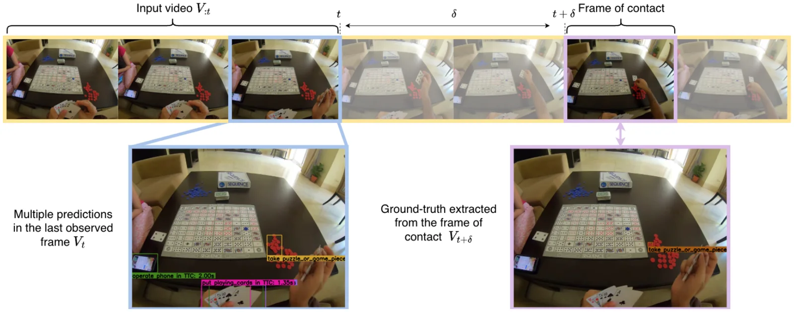
协议。输入一段低分辨率视频（384 px，8 帧，跨 0.5 秒）和最后一帧的高分辨率图（1080 px）。冻结编码器分别用视频的 3D 卷积和图像的 2D 卷积提取最后一层特征。视频特征过一个 4 层注意力探针，再用 STAformer 的“帧引导时间池化”把 3D token 聚成和最后一帧对齐的 2D 表示，加到图像特征上，缩放成 4 个尺度的特征图，送进 StillFast 的检测头（Faster R-CNN 加动词和 δ 的线性层）。DINOv2、DINOv3、V-JEPA 2 用同一协议。
表 4 · Ego4D 短时物体交互预测（照录原文。Top-5 AP / mAP，主指标是最后一列 mAP All）
| 模型 | AP b | b+N | b+V | b+δ | b+N+V | b+δ+N | b+δ+V | All | mAP N | N+V | N+δ | All |
|---|---|---|---|---|---|---|---|---|---|---|---|---|
| 文献报告 | ||||||||||||
| StillFast | - | - | - | - | - | - | - | - | 20.2 | 10.3 | 7.17 | 3.96 |
| STAformer | 38.3 | 28.3 | 16.6 | 12.27 | 12.8 | 8.89 | 5.47 | 4.06 | 29.4 | 15.3 | 9.94 | 5.67 |
| GANO | 45.3 | 27.0 | 12.2 | 16.6 | 6.54 | 9.0 | 4.18 | 2.47 | - | - | - | - |
| 同一协议的编码器 | ||||||||||||
| DINOv2 ViT-L | 45.1 | 37.8 | 21.9 | 14.4 | 17.6 | 10.6 | 7.27 | 5.25 | 28.3 | 15.2 | 9.22 | 5.25 |
| DINOv2 ViT-g | 47.8 | 38.1 | 23.6 | 14.1 | 19.1 | 10.9 | 7.29 | 5.73 | 30.6 | 16.8 | 9.37 | 5.44 |
| DINOv3 ViT-H+ | 48.9 | 40.2 | 23.4 | 13.6 | 19.4 | 10.8 | 6.71 | 5.45 | 32.4 | 17.2 | 9.53 | 5.20 |
| DINOv3 ViT-7B | 50.2 | 40.9 | 23.8 | 14.2 | 19.8 | 11.5 | 7.33 | 5.82 | 33.8 | 17.4 | 10.3 | 5.68 |
| V-JEPA 2 ViT-g | 45.7 | 34.4 | 22.2 | 16.7 | 16.9 | 12.1 | 8.56 | 6.26 | 27.2 | 14.9 | 10.4 | 6.02 |
| V-JEPA 2.1 ViT-g | 47.3 | 36.5 | 23.6 | 18.1 | 18.2 | 13.5 | 9.55 | 7.21 | 28.7 | 15.5 | 11.4 | 6.75 |
| V-JEPA 2.1 ViT-G | 50.7 | 39.3 | 25.8 | 20.2 | 20.3 | 15.1 | 10.8 | 8.20 | 30.9 | 17.2 | 12.8 | 7.71 |
结果。mAP All 7.71，比此前最好的 STAformer 相对高约 35%（STAformer 用了任务专用的组件）。提升主要来自动词（AP b+V 25.8）和接触时间（AP b+δ 20.2）。框本身也准：AP b 50.7，超过 DINOv3 ViT-7B 的 50.2。不过和名词相关的几列（b+N、mAP N、N+V）DINOv3 7B 仍然更高。
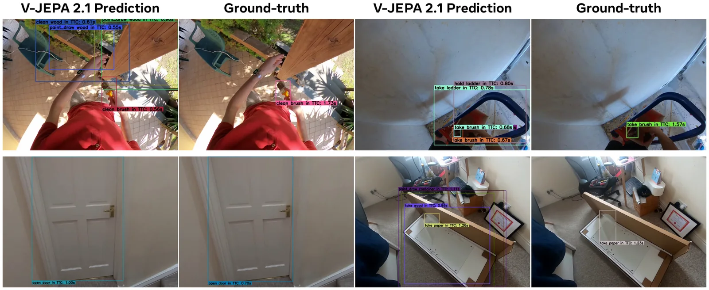
“比此前最好方法相对高约 35%”：7.71/5.67 = 1.360，是 36%，可以说约 35%。正文写“20.20 APb+δ, 12.9 mAPb+δ”，表 4 里 AP b+δ 是 20.2，对；但表里没有“mAP b+δ”这一列，最接近的 mAP N+δ 是 12.8，不是 12.9。
输入设置也有两种说法：§3.1 写视频是“384 px、8 帧、跨 0.5 秒”（即 16 fps）；附录 C.4 写搜索后最好的是“16 帧、384 px、2 fps”，即跨 8 秒。表 4 用的是哪一个，论文没说。
任务。EK-100：45 个厨房、100 小时第一视角做饭视频，3,568 个动作标签（97 个动词 × 300 个名词的组合）。给定动作开始前的一段上下文视频，预测动词、名词和动作，预测间隔默认 1 秒。指标是逐类平均的 Recall@5。
协议。同 V-JEPA 2：取在动作开始前 1 秒结束的视频片段送进编码器；预测器拿编码器表示和“未来 1 秒那一帧”对应的 mask token，预测未来帧的表示；编码器和预测器的输出沿 token 维拼起来，送进注意力探针。探针最后的交叉注意力有 3 个查询 token，分别接动作、动词、名词三个线性分类器，各用 focal loss 再相加。上下文 32 帧、8 fps、384²。
表 5 · EK-100 动作预测，验证集 Recall@5（照录原文）
| 方法 | 参数 | 动词 | 名词 | 动作 |
|---|---|---|---|---|
| InAViT | 160M | 51.9 | 52.0 | 25.8 |
| Video-LLaMA | 7B | 52.9 | 52.0 | 26.0 |
| PlausiVL | 8B | 55.6 | 54.2 | 27.6 |
| V-JEPA 2 ViT-g | 1B | 63.6 | 57.1 | 39.7 |
| V-JEPA 2.1 ViT-g | 1B | 63.6 | 56.2 | 38.4 |
| V-JEPA 2.1 ViT-G | 2B | 64.3 | 59.9 | 40.8 |
结果。同为 1B 时 2.1 和 V-JEPA 2 相当，扩到 2B 后到 40.8，论文称“+2.8%”的新最好。
40.8/39.7 = 1.0277，即相对 +2.8%；绝对只高 1.1 点。同为 ViT-g 时 2.1 的动作 Recall@5 是 38.4，比 V-JEPA 2 的 39.7 低 1.3 点，名词也低 0.9。正文说“相当”，严格说是略低。
按 V-JEPA 2 的流程训一个逐帧因果的动作条件预测器：用 V-JEPA 2 的公开代码，只把特征换成 2.1 视频编码器的；预测器同样是 24 层 Transformer，约 3 亿参数，在 DROID 原始数据上用 teacher forcing 和两步 rollout 损失训练。然后零样本部署到作者实验室的桌面 Franka Panda（平行夹爪），用图像指定目标，做到达、抓取、放置，用模型预测控制，任务配置文件和 V-JEPA 2 完全相同。
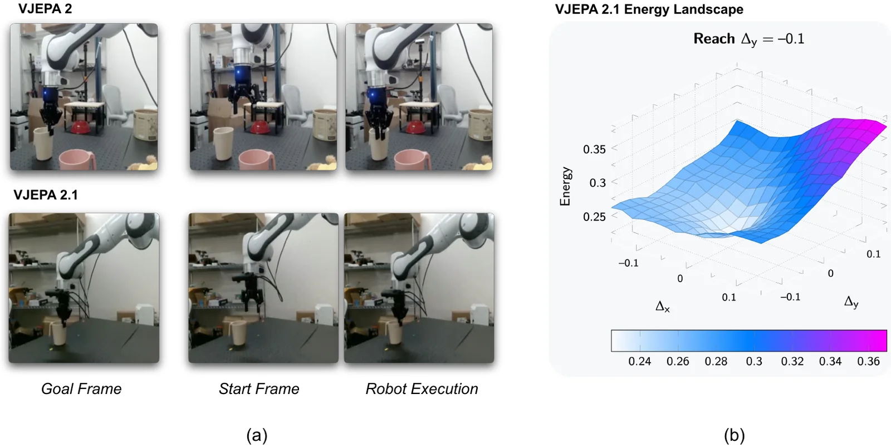
表 6 · 真机抓杯子的闭环规划（照录原文。交叉熵法，单张 A100；每项技能 10 个任务取平均）
| 方法 | 样本数 | 迭代 | 视野 | 时间 | 到达 | 抓取 | 放置 |
|---|---|---|---|---|---|---|---|
| V-JEPA 2 | 800 | 10 | 1 | 3 秒 | 100% | 60% | 80% |
| V-JEPA 2.1 | 800 | 10 | 1 | 3 秒 | 100% | 70% | 80% |
| 300 | 15 | 8 | 14 秒 | 100% | 80% | 80% |
结果。深度理解更好，同样设置下抓取比 V-JEPA 2 高 10%（图 8）。2.1 还能从更长的规划视野里得益：减少 CEM 样本、规划 8 步，抓取再提高；V-JEPA 2 视野加长反而变差。2.1 在放置和抓取上的失败，定性看都是夹爪动作规划得不好（夹早了、搬运途中稍微张开），不是空间理解错。
摘要、引言和表 6 的图注都说抓取比 V-JEPA 2 高 20%。表 6 里 80% 对 60% 的这 20 点，是 2.1 换了规划设置（300 个样本、15 次迭代、视野 8、每步 14 秒）得到的；同样设置（800、10、1、3 秒）只高 10 点，正文 §3.3 也是这么说的。每项技能 10 个任务，所以 10 点就是 1 个任务、20 点是 2 个任务，样本很小。到达和放置两者完全相同。另外表 6 只有杯子：V-JEPA 2 一行的 100/60/80 和仓库 README 里 V-JEPA 2-AC 的杯子成绩相同；README 里还有盒子（抓取 20%、放置 50%），2.1 没报。
给出最近一帧观测和一张目标图，预测 2 秒的导航轨迹。沿用 NWM 的设置，在 2.1 的表示上训一个隐空间世界模型（条件扩散 Transformer，CDiT）。直接在 2.1 的高维嵌入里做扩散很难：表示维度至少是 SD-VAE 的 80 倍，任意方向加噪很容易离开数据流形。两个改动：预测干净表示而不是噪声；用 DDIM 采样（比 DDPM 随机性小，更稳）。规划时用交叉熵法采 N = 480 条 2 秒、4 FPS 的候选轨迹，在世界模型里模拟，选终点离目标嵌入最近的一条；动作空间简化成 3 自由度（平移和偏航）。2.1 只要 8 步去噪，SD-VAE 最少要 128 步。
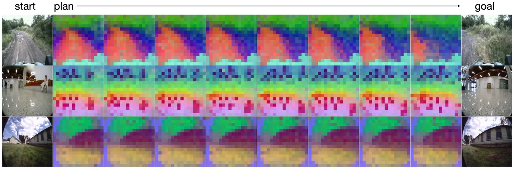
表 7 · 开环导航规划（照录原文。时间是平均规划时间；ATE、RTE 越低越好）
| 模型 | 时间 | RECON | TartanDrive | SCAND | SACSoN | 平均 | |||||
|---|---|---|---|---|---|---|---|---|---|---|---|
| ATE | RTE | ATE | RTE | ATE | RTE | ATE | RTE | ATE | RTE | ||
| NWM | 103.2 s | 1.146 | 0.339 | 5.831 | 1.219 | 1.113 | 0.297 | 4.037 | 0.928 | 3.032 | 0.696 |
| V-JEPA 2.1 ViT-g | 10.6 s | 1.146 | 0.338 | 5.758 | 1.200 | 1.094 | 0.299 | 3.904 | 0.921 | 2.975 | 0.690 |
| V-JEPA 2.1 ViT-G | 10.6 s | 1.179 | 0.340 | 5.687 | 1.187 | 1.038 | 0.285 | 4.054 | 0.938 | 2.990 | 0.688 |
平均列都是四个数据集的简单平均：NWM ATE (1.146 + 5.831 + 1.113 + 4.037)/4 = 3.032，ViT-g 2.9755，ViT-G 2.9895；RTE 0.696、0.6895、0.6875。时间 103.2/10.6 = 9.7 倍。精度上的提升很小：平均 ATE 3.032 → 2.990 只低 1.4%；ViT-G 的平均 ATE 比 ViT-g 还高（2.990 对 2.975），RECON 和 SACSoN 两项的 ATE 比 NWM 差。摘要的“TartanDrive 5.687 ATE”是 ViT-G 唯一明显领先的一项。所以这张表支持的是“快 10 倍、精度不降”，不是“更准”。
“至少 80 倍”：256² 输入时 SD-VAE 的隐变量是 4 × 32 × 32 = 4,096 个数；2.1 ViT-g 是 1,408 × 16 × 16 = 360,448，是 88 倍；ViT-G 1,664 × 256 = 425,984，104 倍。对得上“至少 80 倍”。（导航实验的输入分辨率论文没写，这里按 256² 算。）
任务。语义分割看类别语义和物体边界：Pascal VOC12、ADE20K、Cityscapes，报告 mIoU；按 DINOv3 把输入调到 1,024 个 patch token（patch 16 用 512²，patch 14 用 448²）。深度估计看几何结构：NYUv2 和 KITTI，报告 RMSE。
协议。按 DINOv3：冻结编码器最后一层特征上训一个稠密线性投影，用图像分支，不用中间层。2.1 用 3D RoPE，频率按图像分辨率插值。
表 8 · 稠密任务（照录原文。参数列是“参数量/patch 大小”；VOS 两列是 J&F-Mean）
| 方法 | 参数 | NYUv2 ↓ | KITTI ↓ | ADE20k | Citysc. | VOC | DAVIS-S | YT VOS-S |
|---|---|---|---|---|---|---|---|---|
| 7B 模型 | ||||||||
| Web-DINO | 7B/14 | 0.466 | 3.158 | 42.7 | 68.3 | 76.1 | 57.2 | 43.9 |
| DINOv3 | 7B/16 | 0.309 | 2.346 | 55.9 | 81.1 | 86.6 | 71.1 | 74.1 |
| 2B 以下 | ||||||||
| PEcore | 2B/14 | 0.590 | 4.119 | 38.9 | 61.1 | 69.2 | 48.2 | 34.7 |
| PEspatial | 2B/14 | 0.362 | 3.082 | 49.3 | 73.2 | 82.7 | 68.4 | 68.5 |
| AM-RADIOv2.5 | 1B/14 | 0.340 | 2.918 | 53.0 | 78.4 | 85.4 | 66.5 | 70.1 |
| InternVideo2-1B | 1B/14 | 0.471 | 4.739 | 28.4 | 35.6 | 65.2 | 50.6 | 51.2 |
| SigLIP 2 | 1B/16 | 0.494 | 3.273 | 42.7 | 64.8 | 72.7 | 56.1 | 52.0 |
| DINOv2 | 1B/14 | 0.372 | 2.624 | 49.5 | 75.6 | 83.1 | 63.9 | 65.6 |
| DINOv3 ViT-H+ | 0.8B/16 | 0.352 | 2.635 | 54.8 | 79.5 | 85.8 | 71.1 | 74.0 |
| V-JEPA 2 ViT-g | 1B/16 | 0.642 | 4.650 | 24.4 | 45.9 | 63.9 | 52.5 | 53.7 |
| V-JEPA 2.1 ViT-g | 1B/16 | 0.350 | 2.601 | 47.8 | 71.8 | 84.7 | 68.1 | 72.3 |
| V-JEPA 2.1 ViT-G | 2B/16 | 0.307 | 2.461 | 47.9 | 73.5 | 85.0 | 69.0 | 72.7 |
结果。ViT-G 的 NYUv2 0.307 是线性探针深度的最好成绩，略胜 DINOv3 7B（0.309）和 PEspatial-G（0.362），远好于视频编码器 InternVideo2-1B（0.471）和 V-JEPA 2（0.642）。KITTI 2.461，在 2B 以下的模型里最好（DINOv3 7B 是 2.346）。图 10 和图 12 是定性对比。分割：VOC 85.0、Cityscapes 73.5、ADE20K 47.9，比 V-JEPA 2 高很多，但 ADE20K 和 Cityscapes 仍落后最好的图像编码器。作者猜原因是 VisionMix 里杂乱场景偏少，而这两个数据集类别多、尺度变化大、布局杂乱。
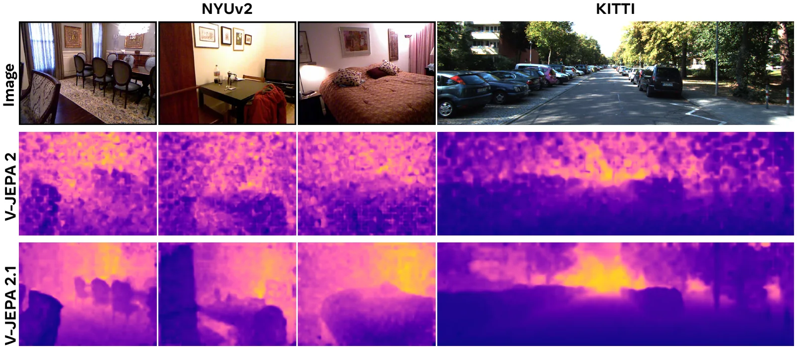
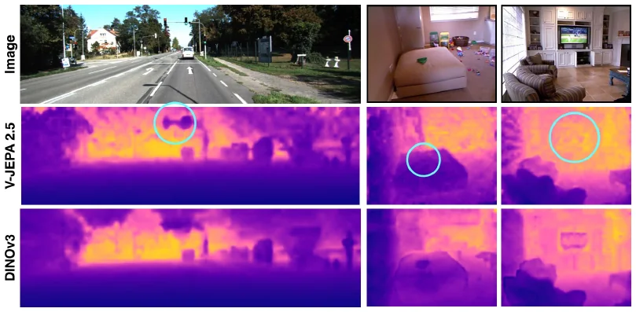
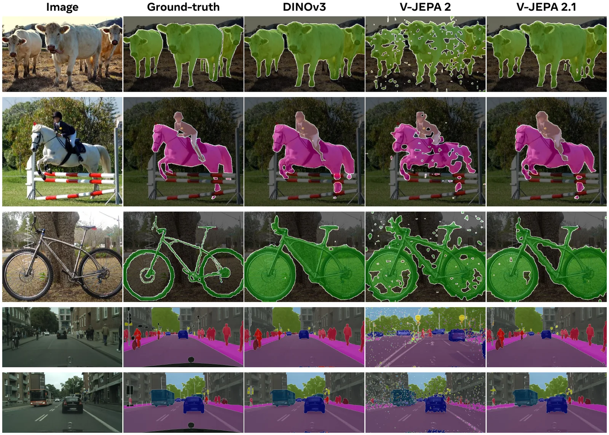
正文写“ADE20K +23.4、Cityscapes +27.6、VOC12 +20.7”。按表 8：47.9 − 24.4 = 23.5，73.5 − 45.9 = 27.6，85.0 − 63.9 = 21.1。Cityscapes 对，另两个差 0.1 和 0.4。“深度最好”的领先只有 0.002 RMSE（0.307 对 0.309），而对手是 7B 模型。
用 VOS 看特征的时间一致性：给第一帧的真值掩码，传播到后面所有帧。DAVIS 2017 和 YouTube-VOS，报告 J&F-Mean。协议是无参数的标签传播：在嵌入空间用余弦相似度匹配相邻帧的 patch，没有可学参数，直接考表示的时间稳定性。按 DINOv3 把短边调到 480 px（patch 16）或 420 px（patch 14）。在训练集上搜超参，DAVIS 最好的是 15 帧上下文、圆形邻域 12、top-5、温度 0.2，用于全部验证集。结果 DAVIS 69.0、YouTube-VOS 72.7，第二好，只低于 DINOv3。
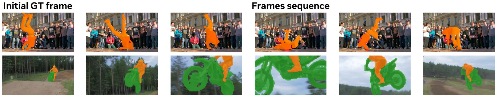
四个数据集：SSv2 和 Diving-48 考运动理解（要看多帧才能判对），Kinetics-400 和 ImageNet-1K 主要考外观（很多类一帧就能猜）。对比对象：图像自监督（DINOv2 带 register、DINOv3）、图文对比（SigLIP2、PEcore G）、视频（V-JEPA、V-JEPA 2、InternVideo2s2-1B），以及文献里的 VideoMAEv2、InternVideo2、VideoPrism、DINOv3。协议同 V-JEPA 2：冻结特征上训 4 层注意力探针，推理时采多个片段平均 logits。作者指出 DINOv3 的探针另加了时空位置编码和 3D 分解 RoPE，2.1 的探针不需要这些。
表 9 · 整体任务，Top-1 准确率（照录原文）
| 方法 | 参数 | SSv2 | Diving-48 | K400 | IN1K |
|---|---|---|---|---|---|
| 文献报告 | |||||
| VideoMAEv2 | 1B | 56.1 | – | 82.8 | 71.4 |
| InternVideo2-1B | 1B | 67.3 | – | 87.9 | – |
| VideoPrism | 1B | 68.5 | 71.3 | 87.6 | – |
| DINOv3 ViT-H+ | 0.8B | 69.8 | – | 86.7 | 87.9 |
| DINOv3 | 7B | 70.1 | – | 87.8 | 88.4 |
| 图像编码器，同一协议 | |||||
| DINOv2 | 1.1B | 50.7 | 82.5 | 83.6 | 86.1 |
| PEcore G | 1.9B | 55.4 | 76.9 | 88.5 | 87.6* |
| SigLIP2 | 1.2B | 49.9 | 75.3 | 87.3 | 88.0 |
| 视频编码器，同一协议 | |||||
| InternVideo2s2-1B | 1B | 69.7 | 86.4 | 89.4 | 85.8 |
| V-JEPA ViT-H | 600M | 74.3 | 87.9 | 84.5 | 80.0 |
| V-JEPA 2 ViT-g | 1B | 77.3 | 90.2 | 87.3 | 85.1 |
| V-JEPA 2.1 ViT-g | 1B | 76.9 | 89.0 | 87.0 | 84.8 |
| V-JEPA 2.1 ViT-G | 2B | 77.7 | 89.2 | 87.7 | 85.5 |
结果。ViT-G 的 SSv2 77.7%，论文称新的最好：InternVideo2 全量微调 77.5，V-JEPA 2 77.3，DINOv3 7B 70.1，同协议的 InternVideo2 69.7。外观任务上 K400 87.7、IN1K 85.5，也有竞争力。从 ViT-g 到 ViT-G 平均提升 0.6 点。
表 9 图注：默认 256²、V-JEPA 2 ViT-g 和 2.1 用 384²；SSv2 是 16 × 2 × 3（16 帧、2 个时间裁剪、3 个空间裁剪）。附录 C.5：所有基准都用 384²；SSv2 是 “64 × 2 × 3”，括号里却又写“16 frames clip”。仓库的 configs/eval_2_1/vitG-384/ssv2.yaml 是 frames_per_clip: 64、num_segments: 2、num_views_per_segment: 3、resolution: 384，标签也叫 64x2x3。所以 2.1 的 SSv2 是 64 帧，表 9 图注的 16 帧（至少对 2.1）不对。
“平均 +0.6”：(0.8 + 0.2 + 0.7 + 0.7)/4 = 0.6，对。但和 V-JEPA 2 ViT-g 同尺寸比，2.1 ViT-g 四项都低：SSv2 76.9 对 77.3，Diving-48 89.0 对 90.2，K400 87.0 对 87.3，IN1K 84.8 对 85.1；EK-100 动作也低（38.4 对 39.7，表 5）。2.1 ViT-G 在 Diving-48 上也低于 V-JEPA 2（89.2 对 90.2）。所以“稠密大涨、整体不丢”在 1B 上是“整体小丢”，整体任务的最好成绩要靠 2B。
按 V-JEPA 2 的配方，用 2.1 编码器加 Llama 3.1 8B 训一个视频大模型。训练数据是 PerceptionLM 公开的一部分，经过领域过滤、图文不对齐过滤，再用 Qwen3VL 打分，去掉 18%，不改写数据。在同样数据上重训了 V-JEPA 2 做对照。流程是 V-JEPA 2 的三阶段（图文描述 → 更高质量的图像和视频描述、问答），再加第四阶段把上下文扩到 64 帧（V-JEPA 2 是 32 帧）。主要用纯视频模式。最后在 PerceptionTest 训练集上再后训一次，所有任务都涨。
表 10 · 视频问答（照录原文。PerceptionTest 是验证集，* 是测试集，测试服务器已停）
| 方法 | 编码器/LLM | 平均 | PerceptionTest | MVP | TempCompass | TemporalBench | TOMATO | TVBench | MVBench |
|---|---|---|---|---|---|---|---|---|---|
| ≤ 8B 视频语言模型，文献报告 | |||||||||
| InternVL-2.5 | 300M/7B | 52.1 | 68.9 | 39.9 | 68.3 | 24.3 | 29.4 | 61.6 | 72.6 |
| Qwen2VL | 675M/7B | 47.0 | 66.9 | 29.2 | 67.9 | 20.4 | 31.5 | 46.0 | 67.0 |
| Qwen2.5VL | 1B/7B | 49.7 | 70.5 | 36.7 | 71.7 | 24.5 | 24.6 | 50.5 | 69.6 |
| PLM 8B | 1B/8B | 56.7 | 82.7* | 39.7 | 72.7 | 28.3 | 33.2 | 63.5 | 77.1 |
| V-JEPA 2 ViT-g384 | 1B/8B | 59.5 | 84.0* | 44.5 | 76.9 | 36.7 | 40.3 | 60.6 | 73.5 |
| 本文用过滤后的 PerceptionLM 数据训练 | |||||||||
| V-JEPA 2 ViT-g384 | 1B/8B | 57.8 | 80.1 | 40.9 | 74.1 | 32.3 | 41.4 | 62.6 | 73.3 |
| V-JEPA 2.1 ViT-G384 | 2B/8B | 57.9 | 83.1 | 43.2 | 74 | 28.5 | 38 | 62.8 | 75.4 |
结果。同数据下 2.1 平均略好，PerceptionTest、MVP、MVBench、TVBench 提高；TemporalBench 和 TOMATO 变差（都是短视频的运动事件理解）。和文献里 V-JEPA 2 的报告值比，2.1 略低，作者归因于对齐数据更少（8,850 万对 7,250 万样本）。
平均列是 7 项的简单平均：2.1 (83.1 + 43.2 + 74 + 28.5 + 38 + 62.8 + 75.4)/7 = 57.86；同数据的 V-JEPA 2 是 57.81；文献 V-JEPA 2 是 59.50；PLM 8B 56.74。“平均略好”就是 0.05 点。正文说 TVBench“显著提高”，表里只是 62.6 → 62.8。对比用的是 2B 的 2.1 对 1B 的 V-JEPA 2，不同尺寸。“8,850 万样本”引的是 Assran et al. (2023)，那是 I-JEPA；V-JEPA 2 是 Assran et al. (2025)，引文年份应是笔误。
图 14 在单张图上比较 V-JEPA 2.1 ViT-G、DINOv2 ViT-g、DINOv3 ViT-H+、V-JEPA 2 ViT-g 的特征 PCA。按 DINOv3 的做法，三个主成分在 6 种 RGB 排列里挑最好看的一种。图 15 扩到 64 帧的整段视频：Ego4D 第一视角、Cityscapes 街景、Diving48 跳水、MoCA 伪装动物，特征在时间上保持一致。
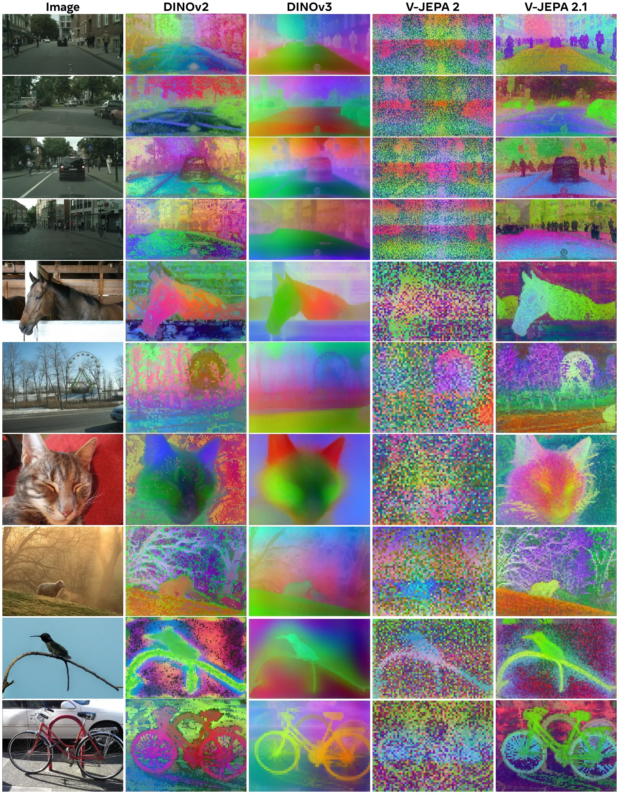
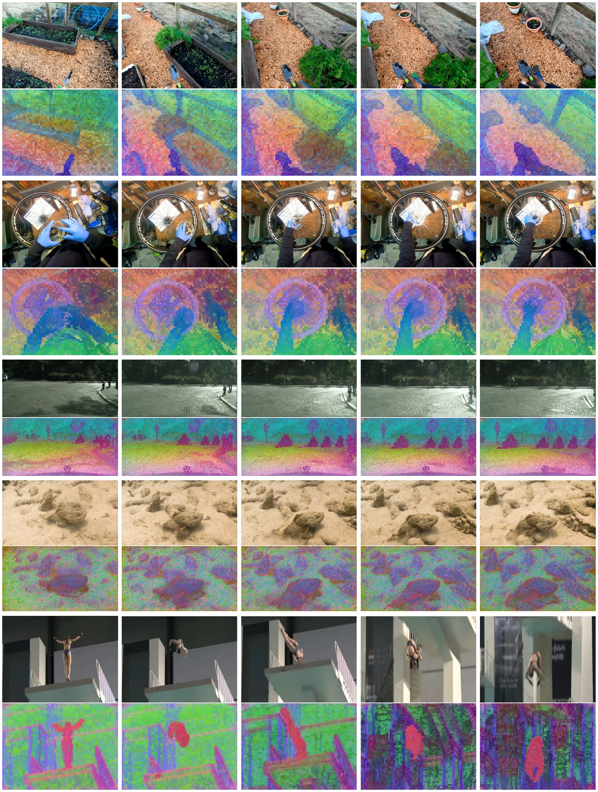
同样的协议评测蒸馏出的 ViT-L 和 ViT-B。从头训的 ViT-L 和从 ViT-G 蒸馏的 ViT-L 相比，所有基准都显著提升，几乎追上 ViT-G：SSv2 74.2 → 76.5（ViT-G 77.7），ADE20K 42.0 → 46.7。ViT-B 和从头训的 ViT-L 相当。
表 11 · 蒸馏的收益（照录原文）
| 模型 | 参数 | 蒸馏 | SSv2 | K400 | IN1K | ADE20K | Citys. | VOC12 | NYU ↓ | KITTI ↓ | DAVIS |
|---|---|---|---|---|---|---|---|---|---|---|---|
| ViT-G | 2B | 77.7 | 87.7 | 85.5 | 47.9 | 73.5 | 85.0 | 0.307 | 2.461 | 69.0 | |
| ViT-L | 300M | 74.2 | 84.3 | 81.8 | 42.0 | 66.7 | 79.6 | 0.381 | 2.914 | 64.5 | |
| ViT-L | 300M | ✓ | 76.5 | 86.9 | 84.9 | 46.7 | 71.0 | 83.9 | 0.336 | 2.490 | 68.7 |
| ViT-B | 80M | ✓ | 74.5 | 85.1 | 84.0 | 42.0 | 64.5 | 78.0 | 0.408 | 2.850 | 67.0 |
正文说蒸馏 ViT-L 的 DAVIS 是“68.7 J&F，接近 67.0”。表 11 里 ViT-G 的 DAVIS 是 69.0，67.0 是 ViT-B 的。应是“接近 69.0”。KITTI 的“2.490 接近 2.461”对。另外从头训的 ViT-L 一行（ADE 42.0、NYU 0.381）和附录表 13 带深监督、只用最后一层的 ViT-L（42、0.381）相同，是同一个模型。
自监督学习。从手工前置任务（相对位置、拼图、修补、上色、预测变换），到联合嵌入学不变性（对比、非对比、聚类），再到 ViT 上的视图不变方法和掩码图像建模（像素空间或隐空间）；最强的方法把两者结合（iBOT、DINOv2）。在隐空间预测缺失信息的思路被 JEPA 形式化，已用于音频、图像、视频。
视频模型。早期用运动线索做前置任务；Kinetics 之后转向监督视频模型（晚融合、3D 卷积、2D+1D 分解、双路、视频 ViT）；监督需要大量标注，焦点又回到自监督：时序验证、对比、未来预测、VideoMAE 一类掩码建模、CLIP 空间掩码、图像视频联合训练（OmniMAE）。扩数据、扩模型证明能学到通用视频编码器；JEPA 在大规模上比生成式更高效，并通向世界建模。
稠密特征。常见办法是设计局部损失（时空一致、裁剪间空间对齐、patch 一致），基于区域的对比（DetCon、ORL），多编码器蒸馏（AM-RADIO、PE、DINOv3，用余弦和 Gram 矩阵正则），事后改进（聚类微调、patch 对齐、patch 排序、STEGO）。结构方面，DPT 把 ViT 序列重组成多尺度 2D 特征图再卷积融合，是 Depth Anything 等模型的基础。
关键是一种深度时空自监督：加权的上下文损失加多层预测器，让中间层也受监督。再加上模态专用 tokenizer、大规模均衡的图像视频数据、扩到 ViT-G，并能有效蒸馏到小模型。ViT-G 在短时交互预测、动作预测、动作识别上拿到冻结骨干的最好成绩，线性探针深度最好，分割和视频目标跟踪很强。
未来工作：继续扩模型（1B 到 2B 趋势很好，DINOv3 说明 7B 有益）和数据；V-JEPA 2 展示过在表示上建世界模型，下一步从稠密预测的角度做世界建模；在需要像素级状态估计的机器人和自主体应用里使用，比如复杂真实环境导航、精细操作。
B、L、g、G 用同一套超参。两阶段：第一阶段 135k 步，学习率 1e-4 预热 12k 步到 5.25e-4，然后恒定；第二阶段冷却 12k 步，学习率 6e-4 衰减到 1e-6。第一阶段视频 16 帧、4 fps，视频和图像都是 256²；冷却阶段视频 64 帧、384²，图像 512²。遮挡策略同 V-JEPA；图像和视频 batch 2,304 和 128；权重衰减 0.04；EMA 0.99925。标准 ViT，patch 16，视频 tubelet 2。预测器 24 层（V-JEPA 2 是 12 层），宽 384。深监督用编码器 4 个“等间距”的中间块。式 (3) 的 λ 视频 0.5、图像 0.7。
| 参数 | 第一阶段 | 冷却阶段 |
|---|---|---|
| 帧数 | 16 | 64 |
| 帧率 | 4.0 | 4.0 |
| 视频裁剪 | 256 | 384 |
| 图像裁剪 | 256 | 512 |
| 随机缩放宽高比 | [0.75, 1.35] | [0.75, 1.35] |
| 随机缩放比例 | [0.3, 1.0] | [0.3, 1.0] |
| 步数 | 135,000 | 12000 |
| 预热步数 | 12,000 | N/A |
| 图像 batch（全局） | 2,304 | 2,304 |
| 视频 batch（全局） | 128 | 128 |
| 起始学习率 | 1e-4 | 6e-4 |
| 最终学习率 | 5.25e-4 | 1e-6 |
| 权重衰减 | 0.04 | 0.04 |
| EMA | 0.99925 | 0.99925 |
| 空间遮挡比例 | [0.15, 0.7] | [0.15, 0.7] |
| 时间遮挡比例 | [1.0, 1.0] | [1.0, 1.0] |
| 遮挡宽高比 | [0.75, 1.5] | [0.75, 1.5] |
| tubelet | 2 | 2 |
| patch | 16 | 16 |
| 预测器层数 | 24 | 24 |
| 预测器宽度 | 384 | 384 |
| 编码器中间块（ViT-G） | [12, 24, 36, 48] | [12, 24, 36, 48] |
| 上下文损失 λ | 视频 0.5，图像 0.7 | 视频 0.5，图像 0.7 |
配置里视频有两个遮挡生成器：一个是 8 个块、每块空间比例 0.15（短程），一个是 2 个块、每块 0.7（长程），宽高比都在 [0.75, 1.5]，时间方向贯穿全部帧。每个样本会生成两种遮挡，编码器对每种各跑一次（MultiSeqWrapper 按遮挡循环），预测器也一样。图像只有一个生成器：10 个块、每块 0.15。表 12 把两个值写成一个区间，容易误读成“从 0.15 到 0.7 随机取”。块会重叠，实际遮掉的比例论文没给。我按 src/masks/multiseq_multiblock3d.py 的规则（每次采一个块大小：面积取整 int(16×16×比例)，宽高比随机，h、w 取整；各块位置均匀随机，取并集）在 16 × 16 网格上模拟 4,000 次：短程平均遮掉约 62%，长程约 81%，图像（10 块）约 68%。这是我算的，第 3 幕当场按同一规则采样。
流程沿用预训练：同样的 JEPA 损失、遮挡、结构和超参，只改几处。EMA 目标编码器换成冻结的老师；预测器最后一层的维度改成老师的维度；不用深监督，预测器只接编码器最后一层，损失也只在最后一层；预测器不用预训练权重，重新训一个 12 层的（预训练是 24 层），蒸馏稳定得多；另存一份上下文编码器的 EMA（Polyak 平均），不进损失，作为最终发布的模型。
也分两阶段：第一阶段用预热再恒定的学习率、低分辨率（16 帧、256²），老师是冷却前的低分辨率 ViT-G；第二阶段短的退火、高分辨率（64 帧、384²），老师换成冷却后的高分辨率 ViT-G，学生从第一阶段的 EMA 学生初始化。这种两阶段比单阶段、或一直用最终高分辨率老师都好。
六个下游任务的协议。正文已经讲过主要设置，这里把超参搜索范围和探针结构放在折叠里。
C.1 深度估计。NYUv2、KITTI，RMSE。按 DINOv3：冻结 patch 特征上训线性层，再接一个可学的 BatchNorm。单张图训练和评测，走 2D 图像分支。学习率扫 {1.5e-3, 1e-3, 8e-4, 3e-4, 1e-4, 8e-5, 3e-5}，权重衰减 {1e-3, 1e-4}。
C.2 语义分割。ADE20K、VOC12、Cityscapes，mIoU。最后一块的 patch 特征（已过 LayerNorm）上训线性分类器，AdamW，学习率 {1.5e-3, 8e-4, 5e-4, 8e-5}，权重衰减 {0.1, 0.01, 1e-4}。ADE20K 和 VOC12 用 512 px，Cityscapes 高 1,024 px。
C.3 视频目标分割。DAVIS 2017（训练/验证 60/30 段）和 YouTube-VOS（只有训练集公开，按 80/20 分）。按 Rajasegaran 等和 DINOv3 做无参标签传播：首帧标签编码成 one-hot patch，后续每帧和首帧及少量过去帧算相似度，在空间邻域内做加权 k-NN。扫上下文长度 {4, 7, 10, 15}、邻域大小 {12, 24, 36}、形状 {方, 圆}、top-k {3, 5, 10}、温度 {0.01, 0.1, 0.2, 0.7}，在 DAVIS 训练集上选，480 px。
C.4 短时交互预测。数据和指标同 §3.1。按 StillFast 官方实现（扩展 Faster R-CNN）。4 个注意力块后接 STAformer 的帧引导时间池化：最后一帧的 2D token 做查询、整段的 3D token 做键值，残差交叉注意力；池化后的 2D 视频 token 双线性插值到高分辨率图像 token 的大小，相加后用 2D 卷积融合，上采样成 1/4、1/8、1/16、1/32、1/64 的金字塔。检测头：RPN 出候选，RoIAlign 取局部特征，拼上 4 层探针池化出的全局 token，经两层全连接后残差加回局部特征；名词、动词、δ 各一个线性层，δ 过 Softplus 保证为正。损失是 Faster R-CNN 损失加动词损失（权重 0.1）和 Smooth-L1 的 δ 损失（0.5）。Adam，学习率 {1e-5, 8e-5, 1.2e-4, 2e-4, 5e-4}；输入扫 {16, 8, 4, 2} fps、{32, 16, 8, 4} 帧、{256, 384} px；图像短边在 {640, …, 800} 里随机、长边不超 1,333。最好的是 16 帧、384 px、2 fps、学习率 1.2e-4。DINOv2、DINOv3、V-JEPA 2 同样搜索，报告各自最好。
C.5 视频和图像分类。IN1K、K400、SSv2、Diving-48。探针：4 个 Transformer 块，16 个头，前三块自注意力，最后一块是带一个可学查询 token 的交叉注意力，交叉注意力输出残差加回查询再过 LayerNorm 和单 GELU 的 MLP，最后接线性分类器。验证时每段取 3 个空间视图。SSv2 64 × 2 × 3，K400 16 × 8 × 3，Diving-48 32 × 4 × 3，全部 384²；图像和视频分别走 2D、3D 分支。batch 256，ImageNet 1,024 且不用多片段。Diving-48 用多层策略：取编码器最后一层和三个中间层的 token 一起送进探针。同时训多个探针头（5 个学习率 × 4 个权重衰减 = 20 个），报告最好的；K400、SSv2、ImageNet 训 20 个 epoch，余弦衰减；Diving-48 训 50 个 epoch。
C.6 动作预测。EK-100，同 §3.2。focal loss α = 0.25、γ = 2.0。上下文 32 帧、8 fps、384²。训练时预测间隔在 0.25 到 1.75 秒随机，预测点在 0.0 到 0.25 随机。探针同 C.5，最后的交叉注意力有一组查询 token，每个接一个线性分类器。
D.1 多尺度评测。没有深监督的模型，用 4 层特征比只用最后一层好很多；有深监督的模型只用最后一层就更强，4 层只多一点点。所以深监督让下游不必取中间层。
表 13 · 深监督和多尺度评测（照录原文，ViT-L 从头训练）
| 深监督 | ADE20k | NYU ↓ | Diving-48 | |||
|---|---|---|---|---|---|---|
| 最后一层 | 4 层 | 最后一层 | 4 层 | 最后一层 | 4 层 | |
| ✗ | 34.9 | 39.1 | 0.513 | 0.463 | 85.8 | 86.9 |
| ✓ | 42 | 43.9 | 0.381 | 0.370 | 87.2 | 88.1 |
D.2 预训练空间分辨率。冷却阶段用 256² 和 384² 对比。论文说高分辨率在所有下游任务上都有益。
| 模型 | 分辨率 | SSv2 | D-48 | K400 | IN1K | EK100 | ADE20k | Citys. | VOC | NYU | KITTI | DAVIS | YT-VOS |
|---|---|---|---|---|---|---|---|---|---|---|---|---|---|
| ViT-g | 256 | 76.7 | 88.6 | 86.2 | 84.1 | 35.7 | 47.8 | 71.7 | 84.6 | 0.359 | 2.611 | 68.0 | 72.0 |
| ViT-g | 384 | 76.9 | 89 | 87 | 84.8 | 38.4 | 47.8 | 71.8 | 84.7 | 0.350 | 2.601 | 67.4 | 71.3 |
| ViT-G | 256 | 77.1 | 89.5 | 87.3 | 84.8 | 38.8 | 47.8 | 73.2 | 84.7 | 0.313 | 2.472 | 68.6 | 72.7 |
| ViT-G | 384 | 77.7 | 89.2 | 87.7 | 85.5 | 40.8 | 47.9 | 73.5 | 85.0 | 0.307 | 2.461 | 69.0 | 72.6 |
384 的两行应该就是正文的发布模型。ViT-g 384：DAVIS 67.4、YT-VOS 71.3，表 8 是 68.1、72.3；ViT-G 384 的 YT-VOS 72.6，表 8 是 72.7。其余（SSv2、K400、IN1K、EK100、分割、深度、ViT-G 的 DAVIS 69.0）和表 5、8、9 一致。
“高分辨率在所有任务上都有益”：按表 14 本身，ViT-g 的 DAVIS（68.0 → 67.4）和 YT-VOS（72.0 → 71.3）下降，ViT-G 的 Diving-48（89.5 → 89.2）和 YT-VOS（72.7 → 72.6）下降，ADE20k 几乎不变。确实有益的是 EK100（+2.7、+2.0）和深度。
官方 facebookresearch/vjepa2 提交 204698b（2026-03-23）。2.1 是 2026-03-17 的 PR #130 合进来的；CHANGELOG 把这次发布写成“[0.0.2] - 2025-03-16”，年份应是 2026；README 里 2.1 论文的链接还是 arxiv.org/abs/TODO。下表把论文说法和代码并列，代码列只引文件名和配置键。
| 项 | 论文 | 代码（204698b） |
|---|---|---|
| 编码器尺寸 | ViT-B/L/g/G：80M/300M/1B/2B | vit_base 768×12，vit_large 1024×24，vit_giant_xformers 1408×40（22 头，MLP 48/11），vit_gigantic_xformers 1664×48（26 头，MLP 64/13） |
| 位置编码 | 3D RoPE，评测时按分辨率插值频率 | 每个头 64 维里时间、行、列各转 20 维，剩 4 维不转；interpolate_rope: true 训练和推理都开，行列位置统一缩放到 256/16 = 16 的网格上，时间不缩放 |
| tokenizer | 视频 2×16×16 3D 卷积，图像 16×16 2D 卷积 | 图像是 Conv3d(1×16×16)，T = 1 时启用（读者注 10） |
| 模态信息 | 可学的模态 token | 加到每个 token 上的两个向量，编码器、预测器各一对 |
| 中间层 | ViT-G [12, 24, 36, 48] | [11, 23, 37, 47]（从 0 数），读者注 7 |
| 预测器 | 24 层、宽 384；MLP 融合 | Linear(4D→D)–GELU–Linear(D→384)；24 层 12 头；被遮和上下文各一个输出头 |
| 上下文损失权重 | λ/√dmin；λ 视频 0.5、图像 0.7 | 欧氏距离开方；图像 λ 也是 0.5（读者注 6）；第 15k 到 30k 步线性预热；冷却阶段关掉距离权重和预热 |
| 遮挡 | [0.15, 0.7] | 视频 8 块 × 0.15 和 2 块 × 0.7 两个生成器；图像 10 块 × 0.15（读者注 23） |
| 数据 | VisionMix163M | K710/SSv2/HowTo 加 ImageNet-1K 占位路径（读者注 8） |
| batch | 视频 128，图像 2,304 | 按配置算 3,072 和 4,608，图像占一半 GPU（读者注 9） |
| 学习率 | 1e-4 → 5.25e-4 恒定；冷却 6e-4 → 1e-6 | 恒定 6e-4；冷却线性衰减但只走到 80%（读者注 12） |
| 冷却分辨率 | 视频 64 帧 384²，图像 512² | 公开配置 64 帧 256²，图像 256² |
| 未在论文出现的开关 | – | 冷却配置有 computing_gram_loss: false、gram_loss_weight: 10.0；MultiSeqWrapper 有 gram_mode（放大 2 倍再缩回的高分辨率特征）。都默认关闭，像是试过 DINOv3 式 Gram 锚定的痕迹，论文没提 |
| 加载 | 发布 B/L（蒸馏）、g、G | torch.hub 的 vjepa2_1_vit_{base,large,giant,gigantic}_384，返回（编码器，预测器）；推理输出最后一层过对应 LayerNorm 的特征 |
OpenWAM 的 openwam/model/video_backbone/encoder/vjepa21_src/ 注明改自官方 commit ce64921（2026-03-17，“Fix eval paths”），比我读的 204698b 早两个提交。我把 vision_transformer.py、modules.py、patch_embed.py 按函数做了语法树比较：共有的函数和方法全部相同，只是删了推理用不到的部分（get_num_layers、no_weight_decay、CrossAttentionBlock、Lambda_LinearWarmupHold、AudioPatchEmbed）和改了导入路径、换行。OpenWAM 额外做了一件事：loader.py 给 RoPE 的旋转函数打补丁，把输出转回输入的 dtype（官方实现在 bf16 下会把 Q、K 升成 fp32，和 bf16 的 V 一起进 SDPA 时报错）。数值上和官方一致，只是解决混合精度下的类型问题。
OpenWAM §4.1.2 把 V-JEPA 2.1 当作“表示式”视觉编码器之一，替换 Wan2.2-TI2V-5B 原配的 VAE，比较不同的预测目标空间。接法的完整走查（六个变体的形状、S-VAE 结构、“维度不匹配”的推算）在 OpenWAM 页读者问答 问 2，这里只说 V-JEPA 2.1 这一路的要点：
vjepa2_1_vitg_384.pt，即 ViT-g/16（40 层、宽 1408、22 个头），manifest 里 tubelet 2、img_size 384、64 帧、checkpoint_key: target_encoder。冻结不训。mixed 走图像分支）。目标帧另走一遍：在 8 帧前面拼上 [f0, f0]，共 10 帧进视频分支得 5 个隐帧，丢掉第一个，剩 4 个，再按相邻两帧求平均（步长 2）得 2 个。拼起来 1 + 2 = 3 个隐帧，和 Wan2.2-VAE 的因果分组（首帧单独、之后每 4 帧 1 个）对齐。V-JEPA 2.1 的 1,024 维模型只有一个：从 ViT-G 蒸馏的 ViT-L（vjepa2_1_vitl_dist_vitG_384.pt）。所以 OpenWAM 论文的“1024-D”如果不是笔误，就是用了这个蒸馏 ViT-L；但 OpenWAM 代码的下载脚本、manifest 和 S-VAE 注释都指向 ViT-g（1,408 维）。图 7 用的是哪个，仍然未核实。另外 OpenWAM 编码器配置文件头的用法注释写着 shift_video=12.0（DINOv3 和 V-JEPA 2.1 两份都是），而骨干配置默认 5.0，图 7 的实验用了哪个 shift 也未核实。
(1) 目标帧那一遍不是只把 8 帧送进去，而是前面拼了 [f0, f0]（vjepa21.py 的 _batch_encode_pooled_raw），让时间注意力能看到参考帧，然后丢掉这一对产生的隐帧。所以 V-JEPA 每个样本要跑两遍编码器：2 帧一遍、10 帧一遍。(2) OpenWAM 的输入是 384 × 320，网格 24 × 20，不是方形；官方 RoPE 的 interpolate_rope 会把行位置乘 15/23、列位置乘 15/19，压到训练时 16 × 16 的网格范围。时间位置不插值，10 帧只用到 0 到 4 五个位置，远少于预训练的 32 个（64 帧 / 2）。这些是按代码读出的，没有运行验证对特征的影响。
以下各条都是本页加的核算或对照，不属于论文内容。点编号跳到对应位置。
论文没写、我也没找到的：VisionMix 训练的总样本数和总 GPU 时间；§3.3 机器人和 §3.4 导航用的是 ViT-g 还是 ViT-G（表 6 没标尺寸）；导航实验的输入分辨率；Fig. 2 里 SSv2 71.1、IN1K 88.1 的出处。
文中提到的数据集、基准和代码。链接在 2026 年 11 月 16 日用脚本检查过，除注明的以外都返回 200。
| 名称 | 是什么 | 主页 | 论文 |
|---|---|---|---|
| V-JEPA 2.1 | 本文 | 代码 | 2603.14482 |
| V-JEPA 2 | 前作，同一仓库 | 博客 · HF | 2506.09985 |
| V-JEPA | 第一代 | – | 2404.08471 |
| NYUv2 | 室内深度 | cs.nyu.edu | Silberman 等，ECCV 2012 |
| KITTI | 驾驶场景深度 | cvlibs.net | Geiger 等，IJRR 2013 |
| ADE20K | 场景分割（本机脚本访问超时，旧地址 groups.csail.mit.edu 301 跳转到这里） | ade20k.csail.mit.edu | 1608.05442 |
| Cityscapes | 城市街景分割 | cityscapes-dataset.com | 1604.01685 |
| Pascal VOC | 分割 | host.robots.ox.ac.uk | Everingham 等，IJCV 2015 |
| DAVIS 2017 | 视频目标分割 | davischallenge.org | 1704.00675 |
| YouTube-VOS | 视频目标分割 | youtube-vos.org | 1809.03327 |
| Ego4D | 第一视角视频，STA 任务 | ego4d-data.org | 2110.07058 |
| EPIC-KITCHENS-100 | 厨房第一视角，动作预测 | epic-kitchens.github.io | 2006.13256 |
| SSv2 | 运动理解分类 | qualcomm.com | 1706.04261 |
| Diving-48 | 跳水动作分类 | svcl.ucsd.edu | Li 等，ECCV 2018 |
| Kinetics | 动作分类（K400/K710） | github.com/cvdfoundation | 1705.06950 |
| ImageNet | 图像分类（本机脚本访问超时，未核实） | image-net.org | Deng 等，CVPR 2009 |
| HowTo100M | 教学视频，预训练 | di.ens.fr | 1906.03327 |
| YT-1B | YouTube 视频（MERLOT Reserve），预训练 | rowanzellers.com | 2201.02639 |
| LVD-142M | DINOv2 筛选的图像集（未公开，链 DINOv2） | github.com/facebookresearch/dinov2 | 2304.07193 |
| DROID | 真机操作数据，训动作条件预测器 | droid-dataset.github.io | 2403.12945 |
| NWM | 导航世界模型，§3.4 的基线和设置 | amirbar.net/nwm | 2412.03572 |
| RECON | 导航数据 | sites.google.com | 2104.05859 |
| TartanDrive | 越野驾驶数据 | github.com/castacks | 2205.01791 |
| SCAND | 社交导航数据 | cs.utexas.edu | 2203.15041 |
| SACSoN | 室内导航数据 | sites.google.com | 2306.01874 |
| PerceptionTest | 视频问答 | github.com/google-deepmind | 2305.13786 |
| MVP | 最小视频对问答 | github.com/facebookresearch | 2506.09987 |
| TempCompass | 时间理解问答 | llyx97.github.io | 2403.00476 |
| TemporalBench | 细粒度时间问答 | temporalbench.github.io | 2410.10818 |
| TOMATO | 视觉时间推理 | github.com/yale-nlp | 2410.23266 |
| TVBench | 时间视频问答 | github.com/daniel-cores | 2410.07752 |
| MVBench | 多任务视频问答 | github.com/OpenGVLab | 2311.17005 |
| PerceptionLM | 视频问答训练数据 | github.com/facebookresearch | 2504.13180 |
| MoCA | 伪装动物视频，图 15 | robots.ox.ac.uk | 2011.11630 |
| RoboTwin 2.0 | OpenWAM §4.1.2 的评测基准 | robotwin-platform.github.io | 2506.18088 |